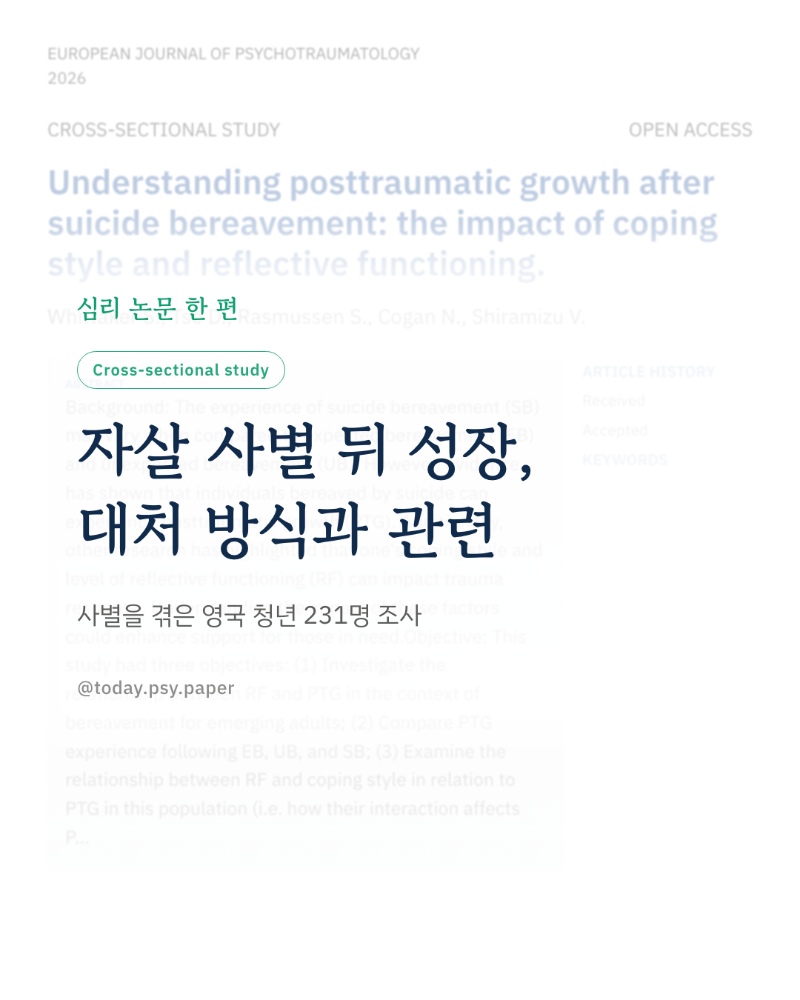
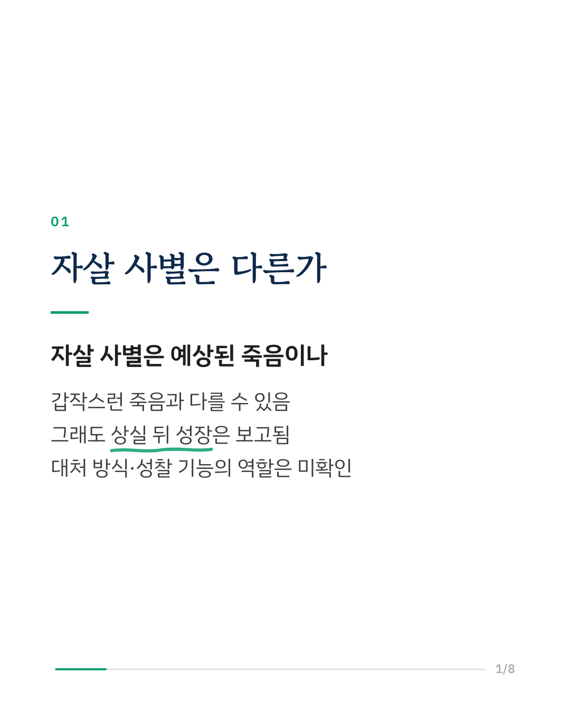
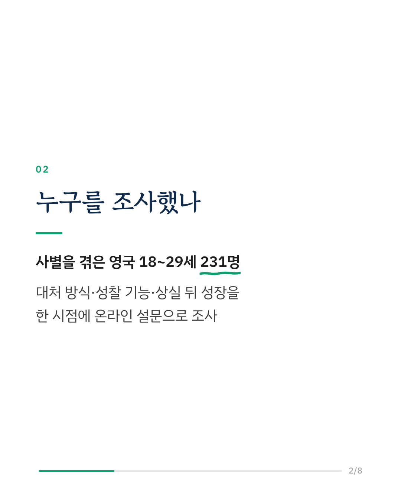
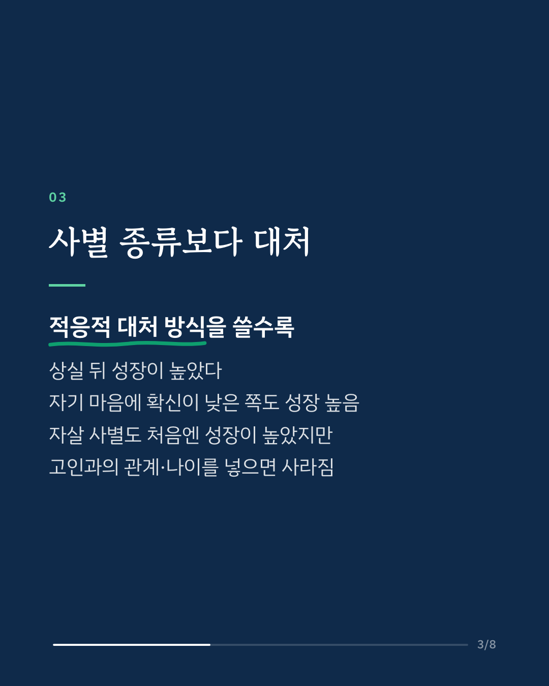
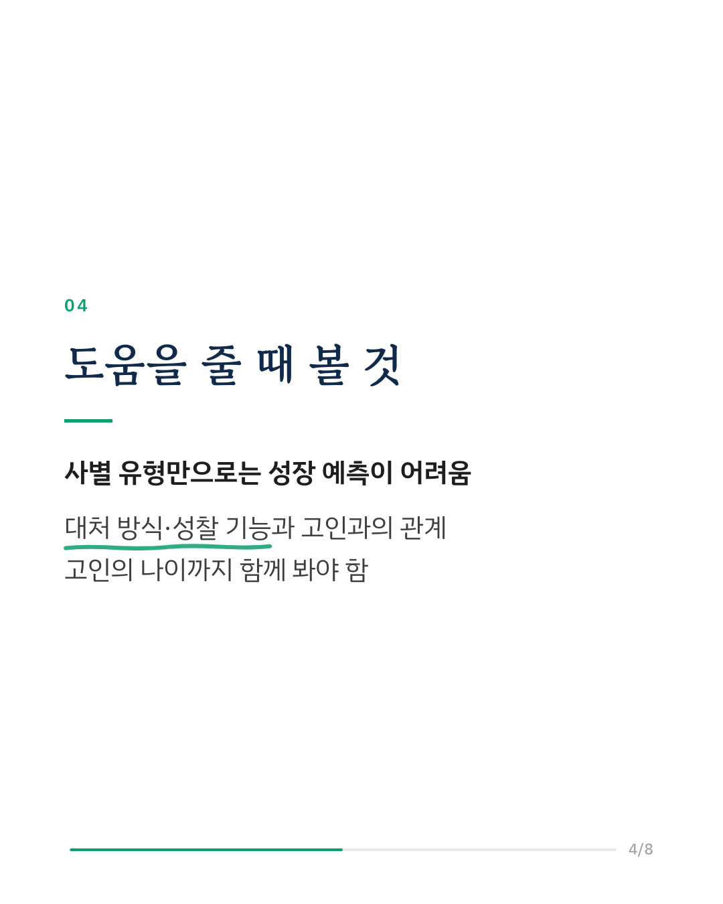
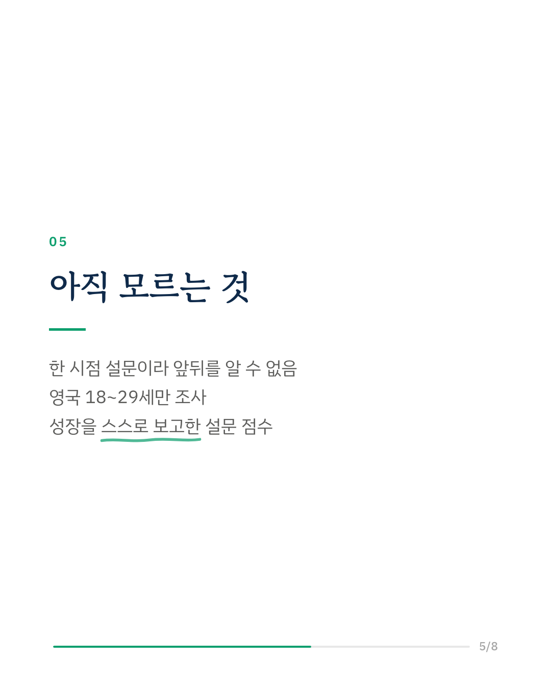
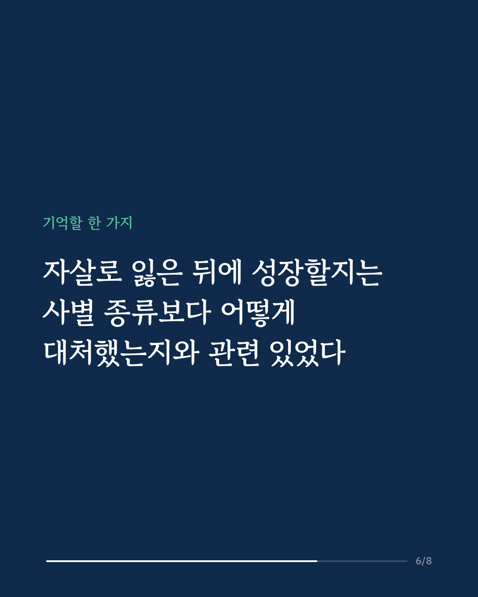
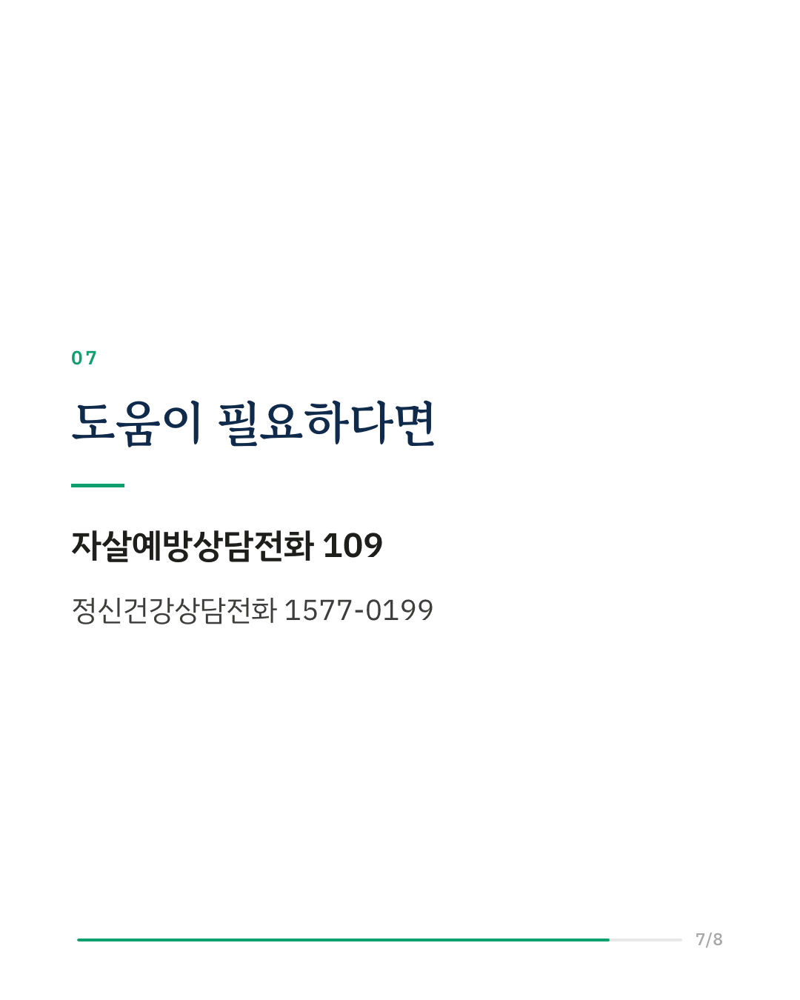
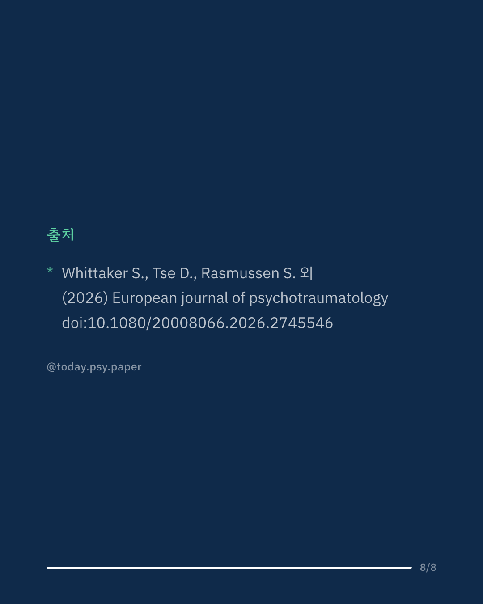

자살로 가족이나 친구를 잃은 사별은 다른 사별과 다를 수 있다고 알려져 있습니다. 그런데 자살 사별을 겪은 사람도 상실 뒤에 삶의 의미를 다시 찾는 '외상 후 성장'을 경험한다는 보고가 있습니다. 영국 연구진은 18~29세 청년 231명에게 온라인 설문을 받아, 사별 유형(예상된 죽음, 갑작스런 죽음, 자살), 대처 방식, 자기와 타인의 마음을 헤아리는 '성찰 기능'이 상실 뒤 성장과 어떻게 관련되는지 살펴봤습니다. 적응적인 대처 방식을 많이 쓸수록 상실 뒤 성장이 높았습니다. 자기 마음 상태에 확신이 적은, 즉 성찰 기능이 낮은 쪽도 성장이 높게 나타났습니다. 자살 사별은 처음 분석에서는 다른 사별보다 성장이 높았지만, 고인과의 관계와 고인의 나이를 함께 넣자 그 차이는 사라졌습니다. 세 요인이 서로 얽혀 작용하는지도 봤지만, 각각의 효과를 넘어서는 설명은 나오지 않았습니다. 연구진은 사별 유형만으로 성장을 짐작하기보다, 대처 방식과 성찰 기능, 고인과의 관계 같은 상실의 특징을 함께 봐야 한다고 말합니다. 성찰 기능과 상실 뒤 성장의 관계를 본 첫 연구이기도 합니다. 한 시점의 설문이어서 어느 쪽이 먼저인지는 알 수 없고, 영국 청년만 참여했습니다. European Journal of Psychotraumatology (2026), 'Understanding posttraumatic growth after suicide bereavement: the impact of coping style and reflective functioning' 힘든 마음이 들 때는 자살예방상담전화 109, 정신건강상담전화 1577-0199에서 도움을 받을 수 있습니다. DOI: 10.1080/20008066.2026.2745546 #임상심리 #정신건강정보 #심리학연구 #논문리뷰 #자살사별 #애도 #외상후성장 #자살유가족
python3 publish.py 42969033